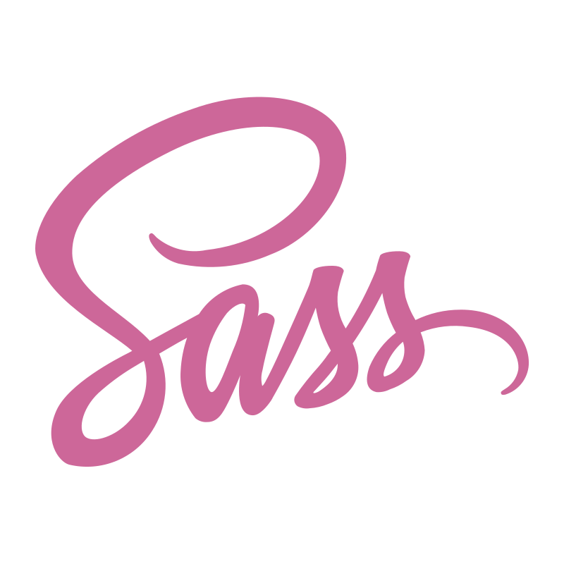
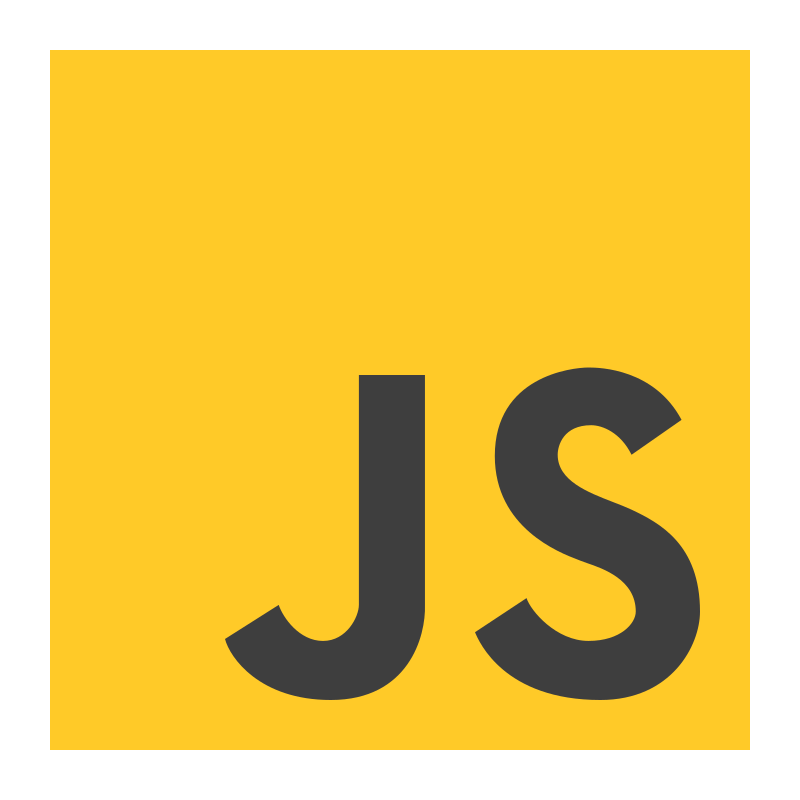
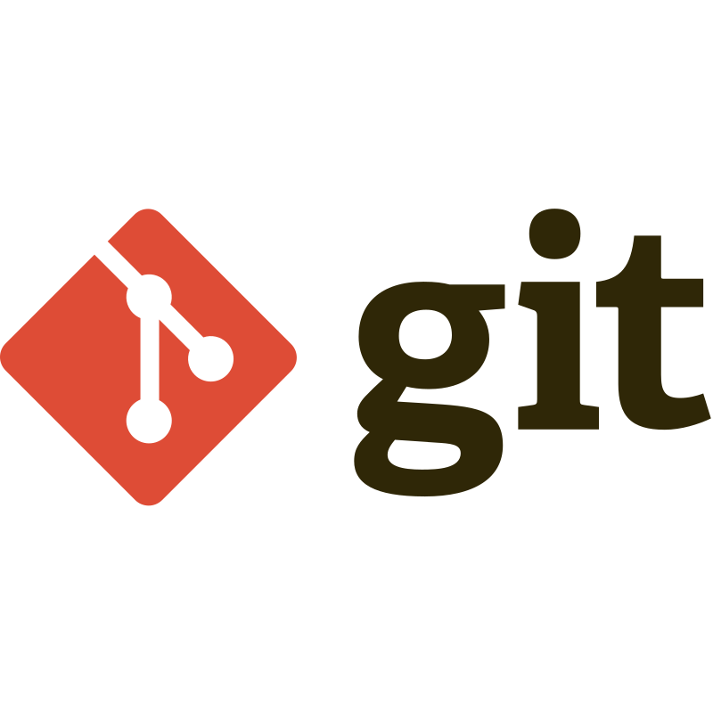
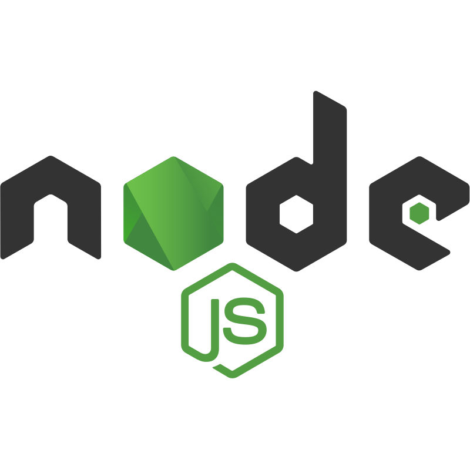

Tecnologías y habilidades
Frontend



Development tools



CMS and e-commerce
Backend

Soy Santiago, un desarrollador web en formación, apasionado por la tecnología y por crear soluciones digitales que respondan a necesidades reales.
Actualmente, estoy desarrollando mis habilidades en programación web y trabajando con tecnologías como HTML, CSS, JavaScript y herramientas del ecosistema de desarrollo. Me interesa comprender no solo cómo construir una aplicación, sino también cómo funciona, cómo se organiza y qué problemas puede resolver.
Mi objetivo es crecer profesionalmente en tres áreas que considero complementarias: desarrollo Full Stack, análisis de sistemas y datos, y ciberseguridad. Quiero adquirir una visión integral de la tecnología que me permita desarrollar aplicaciones, interpretar información y construir soluciones eficientes, confiables y seguras.
Me caracterizo por mi curiosidad, mi orientación práctica y mis ganas de aprender constantemente. Disfruto enfrentar desafíos, investigar distintas alternativas y transformar los conocimientos que adquiero en proyectos concretos. Sé que todavía tengo mucho por aprender, y considero ese proceso una oportunidad para mejorar mi lógica de programación, fortalecer mi autonomía y desarrollar mejores soluciones.
Este portfolio es una muestra de ese recorrido: los proyectos que construyo, las habilidades que desarrollo y los objetivos que me impulsan a seguir creciendo.
Mi objetivo es convertir el conocimiento tecnológico en soluciones útiles, aportar valor a los proyectos en los que participe y seguir evolucionando como profesional.




veran que soy medio autista y no me gustan mucho las cosas que no son simetricas, yo se que vegeta estaria orgulloso de mi ^_^
Tampoco esperen mucho...
si llegaste acá estas muy desesperado o te hice reir mucho con mis ocurrencias. Espero que mis habilidades las ocupes vos y no tu competencia ;D